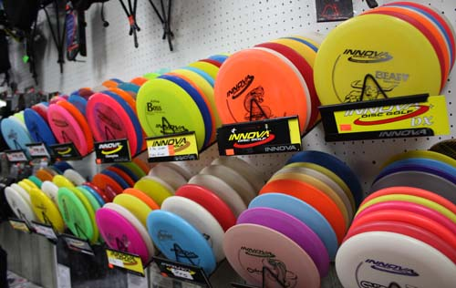

Disc Golf, a very popular sport around Iowa has crept its way into one of my favorite hobbies.
Disc golf is sort of like regular golf when it comes to the equipment used. There are 100's of different types and brands of discs out there. But like regular golf you have the same disc types:
Driver
Midrange
Wedges
Putter

Each Disc has different numbers, and flight patterns, which determins how it flies through the air. Some serious disc golfers have up to 20+ discs that they carry during rounds!
This video is a shot of Amateur disc golfer Archie Anthofer. This video is showing a great example of the proper form while teeing off in disc golf.
If you would like to learn more about rules and regulations, or how to enter tournaments, you can visit http://www.pdga.com/